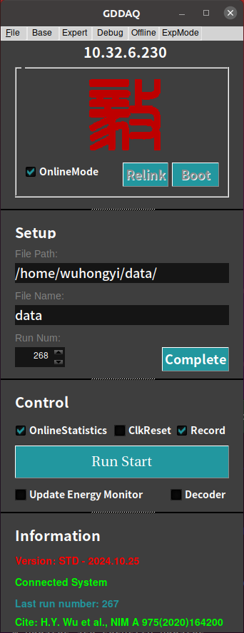

GUI¶
After setting the parameter file in the parset, enter the GUI directory and execute the following command to pop up the main control interface.
./pku
The main control interface¶
At the top of the main interface are five drop-down columns: File, UV_Setup, Expert, Monitor, and Offiline. The submenu inside is as follows:
- File
Exit
About
- UV_Setup
Base Setup
Trigger Filter
Energy
CFD
QDC
Decimation
Copy Pars
Save2File
- Expert
Module Variables
CSRA
Logic Set
- Monitor
Hist & XDT
Trace & Baseline
- Offiline
Adjust Par
Simulation(Not yet implemented)
After the main interface is open, select the Online Mode option. You need to connect to the chassis. All functions (including offline analysis) can be used in this mode. If the Online Mode option is not selected, it means that the offline mode is enabled, and the acquired parameters can be set and modified or analyze the acquired waveform.
After selecting or not selecting the Online Mode option, press the Boot button to start the initialization process and see the status changes in the Information section at the bottom.
After the system is successfully initialized, confirm the file storage path, file name, and file number in the Setup column. If there is any problem, modify it directly. After confirming, press Complete.
After confirming the information in the Setup column, the main button LSRunStart in the Control column is open. Click this button to get data acquisition open, the button status changes to LSRunStop, click the button again, the data acquisition completed, and the Run Num number is automatically added. Click LSRunStart again to open the next run.
Currently, you can adjust and modify the parameters through the submenu in the top drop-down bar before you acquire data. Do not manipulate all options except the Control bar when acquiring data.
The Online Statistics option in the Control column is turned on to get the input rate and output rate information for each signal sent to the OnineStatistics program every 3 s.
Clicking the Update Energy Monitor option once will send the one-dimensional spectrum of each channel in all the internal registers of the modules to the Online Statistics program. Sending this information will cause a certain dead time. Please do not click this option frequently.
File¶
Here it has no practical use.
About¶

The introduction of software developer. The basic operating instructions of the main program will be added later.
UV_Setup¶
The adjustments in this drop-down column are the basics, and anyone using the Pixie16 acquisition system should be familiar with and master the operating techniques.
Base Setup¶
Interface¶

The status below the interface shows a green Ready to indicate that the interface can be operated, otherwise you need to wait.
In the interface, the parameters behind the Module are used to select the adjusted module, Load is used to read the parameter value of the modules, and Apply is to write the value in the interface to the module.
The parameter following the Select Channel at the bottom of the interface indicates that you can choose to copy the parameters of the channel on the interface to other channels, click Copy to complete the copy, and then Apply to write the parameters to the module.
The Base Setup page controls the analog gain, offset and polarity for each channel. It is useful to click on Trace & Baseline in the top control Monitor bar to view the signal read from the ADCs while adjusting these parameters. The display shows one or all 16 channels of a module; you can set the sampling interval for each block to capture a longer time frame in Hist & XDT page. Click Draw to update the graph.
Pulses from the detector should fall in the range from 0 to 16383(14 bit), with the baseline at ~1638 to allow for drifts and/or undershoots and no clipping at the upper limit. If there is clipping, adjust the Gain and Offset or click on the AdjustOffset button to let the software set the DC offsets to proper levels.
Since the trigger/filter circuits in the FPGA only act on rising pulses, negative pulses are inverted at the input of the FPGA, and the waveforms shown in the ADC trace display include this optional inversion. Thus set the channel’s Polarity such that pulses from the detector appear with positive amplitude (rising edge).
In the Base Setup tab, you can set the total trace length and the pre-trigger trace delay for the waveforms to be acquired in list mode runs.
The trace delay cannot be longer than the trace length, and for each Pixie-16 variant, there is also a limit for the maximum value of trace delay and trace length.
Parameters introduction¶
The option Gain indicates the gain adjustment. The user can select the Larger or Small. The gain parameters corresponding to the two files of each module can be tested by the user or be chosen by consulting the manufacturer.
The option Sign indicates the polarity of the selected input signal. The positive signal selects “+” and the negative signal selects “-“.
The option GC indicates whether the channel is data recorded. If it is checked, it means that the channel is recorded. If it is not checked, it means that it is not recorded.
The option ECT means to enable CFD trigger. Otherwise, regular trapezoidal fast trigger will be used.
The red TC, EQS, ERB are used to select which raw data to output:
The option TC indicates the recording waveform. At this time, TraceDelay and TraceLength are valid. If not selected, the waveform is not recorded.
The option EQS means that the scores of the eight QDCs are recorded, and if they are not selected, they are not recorded.
The option ERB represents the three-part area integral of the energy trapezoid(raw energy sums) and the baseline value of the trapezoidal calculation.
The green TraceDelay and TraceLength are the points of the output data. The parameter is divided by the nominal sampling rate of the acquisition card to calculate the actual output data points of the waveform:
TraceDelay indicates the length of the acquired waveform before the trigger.
TraceLength represents the entire waveform acquisition length.
It should be specially noted that when using the down frequency mode, the actual waveform length is TraceDelay x 2^N / TraceLength x 2^N (N is the down-frequency parameter).
The blue Baseline is used to adjust the baseline position and adjust the baseline to the user’s expected position by voltage compensation:
The Baseline adjustable range is 0 - 100, which indicates the percentage of the waveform’s baseline that falls within the full scale. For example, for a vertical precision 14-bit capture card, setting this parameter to 10 means that the baseline reduction compensation is adjusted to around 10% of the 16384 full-scale, near 1638.
The purple DCOffset and BLcut users do not need to be modified, and the parameters can be adjusted automatically. After modifying Baseline, Gain, and Sign in this submenu, you need to press the bottom of the AdjustOffset, and then press BLcutFinder to automatically adjust these two parameters.
Important note¶
Note
trace length in 500 MHz
For the 500 MHz Pixie-16 modules, the ADCs are running at 500 MHz, but the traces are recorded with 100 MHz clocks in the FPGA with 5 ADC samples captured in each 10 ns interval. In addition, the data packing from the FPGA to the onboard External FIFO is two sets of 5 ADC samples in one transfer. So the trace length should be multiples of 20 ns, i.e., 20 ns, 40 ns, … for instance, a trace length of 500 ns and a trace delay of 200 ns.
Tip
Good channel
Only channels marked as good will have their events recorded.
This setting has no bearing on the channel’s capability to issue a trigger.
There can be a triggering channel whose data are discarded.
Channels not marked as good will be excluded from the automatic offset adjustment.
Baseline measurements¶
The Pixie-16 constantly takes baseline measurements when no pulse is detected and keeps a baseline average to be subtracted from the energy filter output during pulse height reconstruction. Baseline measurements that differ from the average by more than the BaselineCut value will be rejected as they are likely contaminated with small pulses below the trigger threshold.
A series of baseline measurements for each channel can be viewed in Trace & Baseline page, and in the BASELINE panel a histogram of baselines can be built to verify that the Baseline Cut does not reject measurements falling into the main (ideally Gaussian) peak in the baseline distribution.
Usually, it is sufficient to keep Baseline Cut at its default value.
Note: Since the baseline computation takes into account the exponential decay, no pulses should be noticeable in the baseline display if
the decay time is set correctly and
the detector pulses are truly exponential.
Baseline Percent is a parameter used for automatic offset adjustment; by clicking on the AdjustOffses button, offsets will be set such that the baseline seen in the ADC trace display falls at the Baseline Percent fraction of the full ADC range (e.g. for a 12-bit ADC and Baseline Percent = 10% the baseline falls at ADC step 409 out of 4096 total).
Trigger Filter¶
Interface¶

When the status below the interface is displaying green Ready, it means that the interface can be operated, otherwise you need to wait. The operation of the bottom button is the same as above.
The parameter Rise Time mean trigger filter rise time.
The parameter Flat Top mean trigger filter flat top time.
The parameter Thresh. represents the threshold, which is set relative to the fast filter waveform.
General rules of thumb for the following important parameters are:
A longer trigger filter rise time averages more samples and thus allows setting lower thresholds without triggering on noise.
Typically the threshold should be set as low as possible, just above the noise level.
A longer trigger filter flat top time makes it easier to detect slow rising pulses.
Digital Filters¶
Energy dispersive detectors, which include such solid state detectors as Si(Li), HPGe, HgI2 , CdTe and CZT detectors, are generally operated with charge sensitive preamplifiers as shown in Figure. Here the detector D is biased by voltage source V and connected to the input of preamplifier A which has feedback capacitor Cf and feedback resistor Rf .

Reducing noise in an electrical measurement is accomplished by filtering. Traditional analog filters use combinations of a differentiation stage and multiple integration stages to convert the preamp output steps, such as shown in Figure (b), into either triangular or semi-Gaussian pulses whose amplitudes (with respect to their baselines) are then proportional to Vx and thus to the gamma-ray’s energy.
Digital filtering proceeds from a slightly different perspective. Here the signal has been digitized and is no longer continuous. Instead it is a string of discrete values as shown in Figure. Figure is actually just a subset of Figure (b), in which the signal was digitized by a Tektronix 544 TDS digital oscilloscope at 10 MSPS (mega samples per second). Given this data set, and some kind of arithmetic processor, the obvious approach to determining Vx is to take some sort of average over the points before the step and subtract it from the value of the average over the points after the step. That is, as shown in follow Figure, averages are computed over the two regions marked “Length” (the “Gap” region is omitted because the signal is changing rapidly here), and their difference taken as a measure of Vx . Thus the value Vx may be found from the following equation:
Where the values of the weighting constants Wi determine the type of average being computed. The sums of the values of the two sets of weights must be individually normalized.
The primary differences between different digital signal processors lie in two areas: what set of weights Wi is used and how the regions are selected for the computation of Equation.
Thus, for example, when larger weighting values are used for the region close to the step while smaller values are used for the data away from the step, Equation produces “cusp-like” filters. When the weighting values are constant, one obtains triangular (if the gap is zero) or trapezoidal filters. The concept behind cusp-like filters is that, since the points nearest the step carry the most information about its height, they should be most strongly weighted in the averaging process. How one chooses the filter lengths results in time variant (the lengths vary from pulse to pulse) or time invariant (the lengths are the same for all pulses) filters. Traditional analog filters are time invariant. The concept behind time variant filters is that, since the gamma-rays arrive randomly and the lengths between them vary accordingly, one can make maximum use of the available information by setting the length to the interpulse spacing.
In principle, the very best filtering is accomplished by using cusp-like weights and time variant filter length selection. There are serious costs associated with this approach however, both in terms of computational power required to evaluate the sums in real time and in the complexity of the electronics required to generate (usually from stored coefficients) normalized Wi sets on a pulse by pulse basis.

The Pixie-16 takes a different approach because it was optimized for high speed operation.
It implements a fixed length filter with all Wi values equal to unity and in fact computes this sum afresh for each new signal value k. Thus the equation implemented is:
Where the filter length is L and the gap is G. The factor L multiplying \(V_{x,k}\) arises because the sum of the weights here is not normalized. Accommodating this factor is trivial.
While this relationship is very simple, it is still very effective. In the first place, this is the digital equivalent of triangular (or trapezoidal if G ≠ 0) filtering which is the analog industry’s standard for high rate processing. In the second place, one can show theoretically that if the noise in the signal is white (i.e., Gaussian distributed) above and below the step, which is typically the case for the short shaping times used for high signal rate processing, then the average in Equation actually gives the best estimate of Vx in the least squares sense. This, of course, is why triangular filtering has been preferred at high rates.
Triangular filtering with time variant filter lengths can, in principle, achieve both somewhat superior resolution and higher throughputs but comes at the cost of a significantly more complex circuit and a rate dependent resolution, which is unacceptable for many types of precise analysis. In practice, XIA’s design has been found to duplicate the energy resolution of the best analog shapers while approximately doubling their throughput, providing experimental confirmation of the validity of the approach.
Energy¶
Interface¶

When the status below the interface is displaying green Ready, it means that the interface can be operated, otherwise you need to wait. The operation of the bottom button is the same as above.
The parameter Rise Time, please refer to Trapezoidal Filtering
The parameter Flat Top, please refer to Trapezoidal Filtering
The parameter Tau, please refer to Baselines and Preamp. Decay Times
The parameter filter range, please refer to Filter Range
The most critical parameter for the energy computation is the signal decay time Tau. It is used to compensate for the falling edge of a previous pulse in the computation of the energy. You can either enter Tau directly for each channel, or enter an approximate value in the right control, select a channel, and click Find it to let the software determine the decay time automatically.
Click Accept it to apply the found value to the channel. (If the approximate value is unchanged,the software could not find a better value.)
At high count rates, pulses overlap with each other at higher frequency. In order to compute the energy or pulse height of those pulses accurately without the need to wait until they decay back to baseline level completely, the pulse height computation algorithm implemented in the Pixie-16 uses the decay time to compute and remove the contribution from the exponentially decaying tail of the overlapping prior pulse when computing the pulse height of the current pulse.
Danger
single exponential decay constant
It is assumed the pulses have only a single exponential decay constant. If pulses have multiple decay constants, it might be possible to use the decay constant that dominates the decay of the pulse, but the accuracy of pulse height computation will be degraded.
General rules of thumb for the following important parameters are:
The energy filter flat top time should be larger than the longest pulse rise time.
The energy filter rise time can be varied to balance the resolution and throughput.
In general, energy resolution improves with the increase of energy filter rise time, up to an optimum when longer filters only add more noise into the measurement.
The energy filter dead time TD is about \(2×(T_{rise}+T_{flat})\), and the maximum throughput for Poisson statistics is 1/(TD x e). For HPGe detectors, a rise time of 4-6us and a flat top of 1us are usually appropriate.
Choose the smallest energy filter range that allows setting the optimum energy filter rise time. Larger filter ranges allow longer filter sums, but increase the granularity of possible values for the energy filter rise time and flat top time and increase the jitter of latching the energy filter output relative to the rising edge of the pulse. This is usually only important for very fast pulses.
Filter Range¶
To accommodate a wide range of energy filter rise times from tens of nanoseconds to tens of microseconds, the filters are implemented in the FPGA with different clock decimations(filter ranges). The ADC sampling rate is either 2ns, 4ns, or 10ns depending on the ADC variant that is used, but in higher clock decimations, several ADC samples are averaged before entering the energy filtering logic. In filter range 1, \(2^{1}\) samples are averaged, \(2^{2}\) samples in filter range 2, and so on. Since the sum of rise time and flat top is limited to 127 decimated clock cycles, filter time granularity and filter time are limited to the values listed in Table .


Trapezoidal Filtering¶
From this point onward, only trapezoidal filtering will be considered as it is implemented in a Pixie-16 module according to Equation \(LV_{x,k}=-\sum_{i=k-2L-G+1}^{k-L-G}V_{i}+\sum_{i=k-L+1}^{k}V_{i}\). The result of applying such a filter with Length L=1 us and Gap G=0.4 us to a gamma-ray event is shown in Figure. The filter output is clearly trapezoidal in shape and has a rise time equal to L, a flattop equal to G, and a symmetrical fall time equal to L. The basewidth, which is a first-order measure of the filter’s noise reduction properties, is thus 2L+G.

This raises several important points in comparing the noise performance of the Pixie-16 module to analog filtering amplifiers.
- First, semi-Gaussian filters are usually specified by a shaping time.
Their rise time is typically twice this and their pulses are not symmetric so that the basewidth is about 5.6 times the shaping time or 2.8 times their rise time.
- Thus a semi-Gaussian filter typically has a slightly better energy resolution than a triangular filter of the same rise time because it has a longer filtering time.
This is typically accommodated in amplifiers offering both triangular and semi-Gaussian filtering by stretching the triangular rise time a bit, so that the true triangular rise time is typically 1.2 times the selected semi-Gaussian rise time.
This also leads to an apparent advantage for the analog system when its energy resolution is compared to a digital system with the same nominal rise time.
One important characteristic of a digitally shaped trapezoidal pulse is its extremely sharp termination on completion of the basewidth 2L+G. This may be compared to analog filtered pulses whose tails may persist up to 40% of the rise time, a phenomenon due to the finite bandwidth of the analog filter. As can be seen below, this sharp termination gives the digital filter a definite rate advantage in pileup free throughput.
Baselines and Preamp. Decay Times¶
Figure shows an event over a longer time interval and how the filter treats the preamplifier noise in regions when no gamma-ray pulses are present.

As may be seen the effect of the filter is both to reduce the amplitude of the fluctuations and reduce their high frequency content. This region is called the baseline because it establishes the reference level from which the gamma-ray peak amplitude Vx is to be measured. The fluctuations in the baseline have a standard deviation \(\sigma_e\) which is referred to as the electronic noise of the system, a number which depends on the rise time of the filter used. Riding on top of this noise, the gamma-ray peaks contribute an additional noise term, the Fano noise, which arises from statistical fluctuations in the amount of charge Qx produced when the gamma-ray is absorbed in the detector. This Fano noise \(\sigma_f\) adds in quadrature with the electronic noise, so that the total noise \(\sigma_t\) in measuring Vx is found from:
The Fano noise is only a property of the detector material. The electronic noise, on the other hand, may have contributions from both the preamplifier and the amplifier. When the preamplifier and amplifier are both well designed and well matched, however, the amplifier’s noise contribution should be essentially negligible. Achieving this in the mixed analog-digital environment of a digital pulse processor is a non-trivial task, however.
With a RC-type preamplifier, the slope of the preamplifier is rarely zero. Every step decays exponentially back to the DC level of the preamplifier. During such a decay, the baselines are obviously not zero. This can be seen in Figure, where the filter output during the exponential decay after the pulse is below the initial level. Note also that the flat top region is sloped downwards.
Using the decay constant \(\tau\), the baselines can be mapped back to the DC level. This allows precise determination of gamma-ray energies, even if the pulse sits on the falling slope of a previous pulse. The value of \(\tau\), being a characteristic of the preamplifier, has to be determined by the user and host software and downloaded to the module.
Pileup Inspection¶
As noted above, the goal is to capture a value of Vx for each gamma-ray detected and use these values to construct a spectrum.
Note
This process is also significantly different between digital and analog systems. In the analog system the peak value must be “captured” into an analog storage device, usually a capacitor, and “held” until it is digitized. Then the digital value is used to update a memory location to build the desired spectrum. During this analog to digital conversion process the system is dead to other events, which can severely reduce system throughput. Even single channel analyzer systems introduce significant deadtime at this stage since they must wait some period (typically a few microseconds) to determine whether or not the window condition is satisfied.
Digital systems are much more efficient in this regard, since the values output by the filter are already digital values. All that is required is to take the filter sums, reconstruct the energy Vx , and add it to the spectrum. In the Pixie-16, the filter sums are continuously updated in the FPGA, and are captured into event buffers. Reconstructing the energy and incrementing the spectrum is done by the DSP, so that the FPGA is ready to take new data immediately (unless the buffers are full). This is a significant source of the enhanced throughput found in digital systems.
The peak detection and sampling in a Pixie-16 module is handled as indicated in follow Figure. Two trapezoidal filters are implemented, a fast filter and a slow filter. The fast filter is used to detect the arrival of gamma-rays, the slow filter is used for the measurement of Vx , with reduced noise at longer filter rise times. The fast filter has a filter length Lf = 0.1us and a gap Gf = 0.1us. The slow filter has Ls = 1.2us and Gs = 0.35us.

The arrival of the gamma-ray step(in the preamplifier output) is detected by digitally comparing the fast filter output to THRESHOLD, a digital constant set by the user. Crossing the threshold starts a delay line to wait PEAKSAMP clock cycles to arrive at the appropriate time to sample the value of the slow filter. Because the digital filtering processes are deterministic, PEAKSAMP depends only on the values of the fast and slow filter constants.
The slow filter value captured following PEAKSAMP is then the slow digital filter’s estimate of Vx . Using a delay line allows to stage sampling of multiple pulses even within a PEAKSAMP interval (though the filter values themselves are then not correct representations of a single pulse’s height).
The value Vx captured will only be a valid measure of the associated gamma-ray’s energy provided that the filtered pulse is sufficiently well separated in time from its preceding and succeeding neighbor pulses so that their peak amplitudes are not distorted by the action of the trapezoidal filter. That is, if the pulse is not piled up. The relevant issues may be understood by reference to Figure, which shows 3 gamma-rays arriving separated by various intervals. The fast filter has a filter length Lf = 0.1us and a gap Gf =0.1us. The slow filter has Ls = 1.2us and Gs = 0.35us.

Because the trapezoidal filter is a linear filter, its output for a series of pulses is the linear sum of its outputs for the individual members in the series. Pileup occurs when the rising edge of one pulse lies under the peak (specifically the sampling point) of its neighbor. Thus, in Figure , peaks 1 an 2 are sufficiently well separated so that the leading edge of peak 2 falls after the peak of pulse 1. Because the trapezoidal filter function is symmetrical, this also means that pulse 1’s trailing edge also does not fall under the peak of pulse 2. For this to be true, the two pulses must be separated by at least an interval of L+G. Peaks 2 and 3, which are separated by less than 1.0 us, are thus seen to pileup in the present example with a 1.2 us rise time.
This leads to an important point: whether pulses suffer slow pileup depends critically on the rise time of the filter being used. The amount of pileup which occurs at a given average signal rate will increase with longer rise times.
Because the fast filter rise time is only 0.1 us, these gamma-ray pulses do not pileup in the fast filter channel. The Pixie-16 module can therefore test for slow channel pileup by measuring the fast filter for the interval PEAKSEP after a pulse arrival time. If no second pulse occurs in this interval, then there is no trailing edge pileup and the pulse is validated for acquisition. PEAKSEP is usually set to a value close to L+G+1. Pulse 1 passes this test, as shown in Figure. Pulse 2, however, fails the PEAKSEP test because pulse 3 follows less than 1.0 us. Notice, by the symmetry of the trapezoidal filter, if pulse 2 is rejected because of pulse 3, then pulse 3 is similarly rejected because of pulse 2.
CFD¶

100 MHz and 250 MHz modules¶
The following CFD algorithm is implemented in the signal processing FPGA of the 100 MHz(Rev. B, C, D and F) and 250 MHz(Rev. F) Pixie-16 modules.
Assume the digitized waveform can be represented by data series Trace[i], i = 0, 1, 2, … First the fast filter response(FF) of the digitized waveform is computed as follows:
Where FL is called the fast length and FG is called the fast gap of the digital trapezoidal filter. Then the CFD is computed as follows:
Where D is called the CFD delay length and w is called the CFD scaling factor(w=0, 1,…, 7).
The CFD zero crossing point(ZCP) is then determined when \(CFD[i]\leq0\) and \(CFD[i+1]<0\). The timestamp is latched at Trace point \(i\), and the fraction time \(f\) is given by the ratio of the two CFD response amplitudes right before and after the ZCP.
Where CFDout1 is the CFD response amplitude right before the ZCP, and CFDout2 is the CFD response amplitude right after the ZCP(subtraction is used in the denominator since CFDout2 is negative). The Pixie-16 DSP computes the CFD final value as follows and stores it in the output data stream for online or offline analysis.
Where N is scaling factor, which equals to 32768 for 100 MHz modules and 16384 for 250 MHz modules, respectively.


Figure shows a sample ADC trace, its fast filter response and its CFD response, respectively.
The top figure shows a raw ADC trace. After computing the fast filter response on the raw ADC trace using Equation \(FF[i]\), the fast filter response is compared against the fast filter threshold as shown in the middle figure. The ADC sample where the fast filter response crosses the fast filter threshold is called the fast trigger point, which also starts the search for the CFD zero crossing point.
The CFD response is computed using Equation \(CFD[i+D]\) and is shown in the bottom figure(for actual implementation in the firmware, the fast filter response FF is delayed slightly before being used for computing the CFD response so that there are sufficient number of CFD response points to look for the zero crossing point after the fast trigger). To prevent premature CFD trigger as a result of the noise in the CFD response before the actual trigger, a DSP parameter called CFDThresh is used to suppress those noise-caused zero crossing. However, if a zero crossing point cannot be found within a certain period after the fast trigger (typically 32 clock cycles), e.g., due to unnecessarily high CFDThresh, a forced CFD Trigger will be issued and a flag will be set in an event header word to indicate that the recorded CFD time for this event is invalid.
However, the event will still have a valid timestamp which is latched by the fast filter trigger when fast filter crosses over the trigger threshold. The aforementioned CFD parameters correspond to the following DSP parameters.

Note
250 MHz
In the 250 MHz Pixie-16 modules, the event timestamp is counted with 125 MHz clock ticks, i.e., 8 ns intervals, and two consecutive 250 MHz ADC samples are captured in one 8 ns interval as well.
The CFD trigger also runs at 125 MHz, but the CFD zero crossing point is still reported as a fractional time between two neighboring 250 MHz ADC samples, which are processed by the FPGA in one 125 MHz clock cycle.
However, the CFD zero crossing point could be in either the odd or even clock cycle of the captured 250 MHz ADC waveforms.
Therefore, the firmware outputs a “CFD trigger source” bit in the output data stream to indicate whether the CFD zero crossing point is in the odd or even clock cycle of the captured 250 MHz ADC waveforms.
Note
100 MHz
In the 100 MHz Pixie-16 modules, event timestamp, CFD trigger, and ADC waveform capture are all carried out with the same 100 MHz clock. So there is no need to report “CFD trigger source” for the 100 MHz Pixie-16 modules.
500 MHz modules¶
The CFD algorithm discussed in the previous section for the 100 MHz and 250 MHz Pixie-16 modules can also be written in the following format:
Where a(i) is the ADC trace data, k is the index, and w, B, D, and L are CFD parameters.
The CFD algorithm implemented in the 500 MHz Pixie-16 modules is special when compared to the one implemented in the 100 MHz and 250 MHz Pixie-16 modules in terms of the ability to adjust parameters w, B, D, and L.
The reason for this is that in the 500 MHz Pixie-16 modules, ADC data that come into the FPGA at the speed of 500 MHz is first slowed down with a ratio of 1:5, in other words, the FPGA captures 5 ADC samples at the rate of 100 MHz, i.e., every 10 ns. The FPGA then tries to find the CFD trigger point between any two adjacent 2-ns ADC samples within that 10 ns by first building sums of ADC samples and then calculating differences between delayed and non-delayed sums until the zero crossing point is found. However, in the 500 MHz Pixie-16 modules, the FPGA does not have enough resources to build sums for 5 ADC samples in parallel with variable delays. Therefore, the CFD algorithm for the 500 MHz modules was implemented using a set of fixed CFD parameters as shown in Table Fixed CFD Parameter Values for 500 MHz Pixie-16 Modules. Tests show these fixed parameters give best performance for LaBr3(Ce) detectors.

The CFD time given by the 500 MHz Pixie-16 modules consists of two parts: a shift within the 5 ADC samples and a fractional time between two ADC samples where the CFD zero crossing occurred. The shift within the 5 ADC samples is reported as the 3-bit CFD trigger source[2:0] is defined as follows.

CFD 分数时间如下：
QDC¶
Interface¶

Eight QDC sums, each of which can have different lengths, are computed in the Signal Processing FPGA of a Pixie-16 module for each channel and the sums are written to the list mode output data stream if the user requests so.
The recording of QDC sums starts at the waveform point which is Pre-trigger Trace Length or Trace Delay earlier than the trigger point, which is either the CFD trigger or channel fast trigger depending on whether or not CFD trigger mode is enabled.
The eight QDC sums are computed one by one continuously, but they are not overlapping. The recording of QDC sums ends when the eight intervals have all passed.


Expert¶
The contents in this drop-down column are high-level, and you need to learn to master the acquisition logic.
Module Variables¶
Interface¶

In addition to distributing the global clock signal, the Pixie-16 rear I/O trigger module can also share global triggers and run synchronization signals. The global trigger signals include the global validation trigger and global fast trigger, plus the Pixie-16 FPGA data storage buffers’ full flag signal. The run synchronization signals include synchronous run start and stop signals that can be shared among multiple crates.
In order to enable the distribution of such global triggers and run synchronization signals, certain Pixie-16 parameters have to be set properly. The parameter that controls the trigger distribution and run synchronization is the Module Control Register B (ModCSRB).
ModCSRB is a 32-bit parameter with each of 32 bits controlling different operation modes of the Pixie-16 module.
Note
Trigger Distribution and Run Synchronization
For the System Director module that is installed in the Master crate, bits 0, 4, 6 and 11 of ModCSRB should be set to 1 (checked & enabled).
For the Crate Master module that is installed in the Slave crate, bits 0, 6 and 11 of ModCSRB should be set to 1 (checked & enabled).
For the General modules that are installed in both the Slave crate and Master crate, bit 11 of ModCSRB should be set to 1 (checked & enabled).
Register definition¶
Module Control Register B affecting the module as a whole.
- bit 0 - MODCSRB_CPLDPULLUP
Enable pullups for PXI trigger lines on the backplane through an onboard CPLD.
With the pullups, those PXI trigger lines default to logic high state.
Only when one module actively pulls a line to logic low state will such a line be in the low state.
Therefore signals transmitted over those PXI trigger lines are actively low signals.
Note: enable this bit only for one module per crate (e.g. the crate master module)
- bit 4 - MODCSRB_DIRMOD
Set this module as the Director module so that it can send triggers, trace and header DPM full signal and run synchronization signal to all crates through the rear I/O trigger modules.
Here triggers include fast trigger and validation trigger
Note: enable this bit only for one module among all crates (e.g. the system director module in multi-crate configuration)
- bit 6 - MODCSRB_CHASSISMASTER
Set this module as the chassis master module so that it can send triggers, trace and header DPM full signal and run synchronization signal to the backplane of the local crate.
Here triggers include fast trigger and validation trigger
Note: enable this bit only for one module per crate(e.g. the crate master module)
- bit 7 - MODCSRB_GFTSEL
Select external fast trigger source(=1: external validation trigger, =0: external fast trigger, in case these two signals are swapped at the Pixie-16 front panel input connectors)
- bit 8 - MODCSRB_ETSEL
Select external validation trigger source(=1: external fast trigger, =0: external validation trigger, in case these two signals are swapped at the Pixie-16 front panel input connectors)
- bit 10 - MODCSRB_INHIBITENA
Enable(=1) or disable(=0) the use of external INHIBIT signal.
When enabled, the external INHIBIT signal in the logic high state will prevent the run from starting until this external INHIBIT signal goes to logic low state.
- bit 11 - MODCSRB_MULTCRATES
Set this module to run in the multi-crate mode(=1) or in the local-crate mode(=0).
If the module is running in multi-crate mode, it will use the trace and header DPM full signal and run synchronization signal that are generated and distributed among multiple crates.
If the module is running in local-crate mode, it will use the trace and header DPM full signal and run synchronization signal generated in the local crate.
- bit 12 - MODCSRB_SORTEVENTS
Sort(=1) or do not sort(=0) events from all 16 channels of a Pixie-16 module based on the timestamps of the events, before storing the events in the external FIFO.
Note: all 16 channels must have the same DAQ parameters setting to use this feature
- bit 13 - MODCSRB_BKPLFASTTRIG
Enable(=1) or disable(=0) the sending of 16 local fast triggers to the 16 lines on the backplane of the crate.
Note: only one module can enable this option in each PCI bus segment of a crate(not limited to the crate master module, e.g. any module in each PCI bus segment)
CSRA¶
Interface¶

- The yellow FTS and GTS combinations are used to select the channel fast trigger:
When both are not selected, it is local fast trigger.
When selecting FTS, it is a latched module fast trigger.
FTS is not selected, GTS is selected as a latched channel validation trigger.
- Blue MSE, CSE, MVT, CVT are used to select module/channel validation trigger:
MVT is the module validation trigger.
CVT is the channel validation trigger.
MSE select module validation trigger depends on System FPGA or front panel module GATE.
CSE selection channel validation trigger depends on System FPGA or front panel channel GATE.
- The pink NPR, IPR combination is used to select the treatment of the pileup event:
All events are logged when both are not selected, and the accumulated event energy value is invalid.
NPR selection does not record stacking events when IPR is not selected.
When the NPR is not selected, the event record waveform is accumulated, and the waveform is not recorded when it is not stacked.
When both NPR and IPR are selected, only the stacked events are recorded.
- Green CTV, CVS, MVS are used to select module/channel veto:
MVS select module veto depending on the front panel module GATE or module validation trigger.
CVS select channel veto depending on the front panel channel GATE or channel validation trigger.
CTV is whether to enable channel trigger veto.
- The Red contents are the basic settings.
Black NTL is to keep the waveform out of range.
Black ETS is to record the data of the external clock.
The remaining BDA does not need to be selected, HE does not matter.
Register definition¶
Channel Control Register A affecting each channel individually
- bit 0 - CCSRA_FTRIGSEL
Channel fast trigger selection(=1: module fast trigger from the System FPGA; =0: the selection depends on the value of another bit CCSRA_GROUPTRIGSEL – if CCSRA_GROUPTRIGSEL = 1, select the channel validation trigger from the System FPGA, and if CCSRA_GROUPTRIGSEL = 0, select this channel’s local fast trigger)
- bit 1 - CCSRA_EXTTRIGSEL
Module validation trigger selection(=1: module gate input from the Pixie-16 front panel Module Gate LVDS connector; =0: module validation trigger from the System FPGA)
- bit 2 - CCSRA_GOOD
Set this channel as a Good channel(=1) or a not Good channel(=0).
When a channel is set to be a not Good channel, it still generates local fast triggers, which could be used in multiplicity computation, etc., but this channel will not record list mode data or MCA data, and will not update its baseline value
- bit 3 - CCSRA_CHANTRIGSEL
Channel validation signal selection(=1: channel gate input from the Pixie-16 front panel Channel Gate LVDS connector; =0:channel validation trigger from the System FPGA)
- bit 4 - CCSRA_SYNCDATAACQ
Choose the level of synchronous data acquisition for this channel(=1: stops taking data when the trace or header DPM for any channel of any Pixie-16 module in the system is full; =0: stops taking data only when the trace or header DPM for this channel of this Pixie-16 module is full)
- bit 5 - CCSRA_POLARITY
Choose this channel’s input signal polarity(=1: invert input signal’s polarity; =0: do not invert input signal’s polarity).
Please note in Pixie-16, signal processing requires positive rising input signal. So if input signal has a negative falling edge, it should be inverted by setting this CCSRA_POLARITY bit to 1
- bit 6 - CCSRA_VETOENA
Enable(=1) or disable(=0) this channel’s veto.
If veto is enabled, this channel’s fast trigger will be vetoed by either the module veto signal(see bit 20 CCSRA_MODVETOSEL below) or channel veto signal(see bit 19 CCSRA_CHANVETOSEL below).
But if veto is disabled, this channel’s fast trigger will not be vetoed by either veto signal, even if either veto signal is present
- bit 7 - CCSRA_HISTOE
Enable(=1) or disable(=0) the histogramming of pulse energy values in the onboard MCA memory.
However, the current Pixie-16 firmware always histograms pulse energy values in the onboard MCA memory.
So this CCSRA_HISTOE is essentially not in use at the moment
- bit 8 - CCSRA_TRACEENA
Enable(=1) or disable(=0) trace capture in the list mode run for this channel
- bit 9 - CCSRA_QDCENA
Enable(=1) or disable(=0) QDC sums recording in the list mode run for this channel.
There are a total of 8 QDC sums for each event
- bit 10 - CCSRA_CFDMODE
Enable(=1) or disable(=0) CFD trigger in the list mode run for this channel.
CFD trigger is used to latch sub-sample timing for the event time of arrival or timestamp
- bit 11 - CCSRA_GLOBTRIG
Enable(=1) or disable(=0) the requirement of module validation trigger for this channel.
If enabled, only when module validation trigger overlaps the channel fast trigger will the events be recorded for this channel
- bit 12 - CCSRA_ESUMSENA
Enable(=1) or disable(=0) the recording of raw energy sums and baseline values in the list mode run for this channel.
There are a total of three raw energy sums and one baseline value for each event.
Please note the baseline value is stored in the format of 32-bit IEEE float point(IEEE 754)
- bit 13 - CCSRA_CHANTRIG
Enable(=1) or disable(=0) the requirement of channel validation trigger for this channel.
If enabled, only when channel validation trigger overlaps the channel fast trigger will the events be recorded for this channel
- bit 14 - CCSRA_ENARELAY
Switch between two attenuations or gains for the input signal in this channel through an input relay(=1: close the input relay resulting in no input signal attenuation; =0: open the input relay resulting in a 1⁄4 input signal attenuation)
- bit 15/16 - CCSRA_PILEUPCTRL/CCSRA_INVERSEPILEUP
Control normal pileup rejection(bit 15) and inverse pileup rejection(bit 16) for list mode runs:
Bits [16:15] = 00, record all events
Bits [16:15] = 01, only record single events, i.e., reject piled up events
Bits [16:15] = 10, record everything for piled up events, but will not record trace for single events even if trace recording is enabled, i.e., only record event header
Bits [16:15] = 11, only record piled up events, i.e., reject single events
In all cases, if the event is piled up, no energy will be computed for such event
- bit 17 - CCSRA_ENAENERGYCUT
Enable(=1) or disable(=0) the “no traces for large pulses” feature.
If enabled, trace will be not be recorded if the event energy is larger than the value set in DSP parameter EnergyLow
- bit 18 - CCSRA_GROUPTRIGSEL
Select channel fast trigger – this bit works together with the CCSRA_FTRIGSEL bit(bit 0): if CCSRA_FTRIGSEL=1, this CCSRA_GROUPTRIGSEL bit has no effect; if CCSRA_FTRIGSEL=0, then if CCSRA_GROUPTRIGSEL=1, select the channel validation trigger from the System FPGA, and if CCSRA_GROUPTRIGSEL=0, select this channel’s local fast trigger
- bit 19 - CCSRA_CHANVETOSEL
Channel veto signal selection(=1: channel validation trigger from the System FPGA; =0: channel gate input from the Pixie-16 front panel Channel Gate LVDS connector)
- bit 20 - CCSRA_MODVETOSEL
Module veto signal selection(=1: module validation trigger from the System FPGA; =0: module gate input from the Pixie-16 front panel Module Gate LVDS connector)
- bit 21 - CCSRA_EXTTSENA
Enable(=1) or disable(=0) the recording of the 48-bit external clock timestamp in the event header during list mode run for this channel


Monitor¶
The adjustment in this drop-down column is to monitor the waveform noise level, baseline distribution, and so on.
Hist & XDT¶
Interface¶

The binning factor controls the number of MCA bins in the spectrum. Energies are computed as 16 bit numbers, allowing in principle 64K MCA bins.
However, spectrum memory for each channel is limited to 32K bins, so computed energy values are divided by \(2^{binning factor}\) before building the histogram. Binning Factor is usually set to 1, but for low count rates and wide peaks, it might be useful to set it to a larger value to obtain a spectrum with fewer bins, but more counts per bin.
\(E_{min}\) is reserved for a future function to subtract a constant “minimum energy” from the computed energy value before binning to essentially cut off the lower end of the spectrum.


Offiline¶
The contents in this drop-down column are the offline parameter optimization adjustment.
InitData¶

Run: Select the file run number to be read, Mod: selects to read which module, and the button Read loads the file main information (channel address, energy, waveform position, etc.) into the memory.
Additional analysis: Among the three options, the selection indicates that the information is included when reading the file data into memory. Some analysis methods can only be enabled if this data is read. But the premise is that this information needs to be recorded during data collection.
InitData: This page. Read the binary file.
Adjust Par: Waveform/fast filter/energy filter/cfd/threshould of the select channel.
Wave-16: Waveform/fast filter/energy filter/cfd filter/threshould of the 16 channels.
Energy-16: The original energy spectrum of the 16 channel..
Orig Energy: The original energy spectrum of the select channel.
Calc Energy: Recalculation of energy spectrum by waveforms.
FF/CFD Thre: Accumulation of a large number of fast filter/cfd filter waveforms to determine the threshold.
Energy-FF: The two dimensional relationship between energy and fast filter first/second peak height.
QDC: It will be finished soon.
FFT: Fourier transformation of a single waveform. User can choose XIA/CAEN/FFTW3 functions.
Time Diff: Time difference of two signal.
Adjust Par¶

To calculate the fast filter and slow filter cfd curves offline from the acquired waveform, the following requirements are imposed on the acquired waveform. In the above figure, the calculated energy is the difference between the energy of the algorithm and the baseline of the algorithm. To get the correct trapezoid, the premise is that there is a long enough point in front to calculate the baseline.
In the figure, EFRT stands for Energy Filter Rise Time and EFFT stands for Energy Filter Flat Top.
To compute energy filter response offline, the ideal settings are:
Total trance length > 2 x ( 2 x EFRT + EFFT)
Pre-trigger trace (Trace-delay) length > ( 3 x EFRT + EFFT )
Of course, this is just one way to calculate the trapezoid. If we record the baseline of the energy trapezoid for each event and use the average of the pre-trigger partial points as the infinite extension to the left of the waveform, then this is not limited by this condition Pre-trigger trace length > ( 3 x EFRT + EFFT ) . In the following pages, when using the Old Baseline method to calculate the energy trapezoid, there is a premise that the pre-trigger trace length requires at least 200 points because the left side of the waveform is averaged by the first 200 points.

When the acquired waveform pre-trigger trace length > 3 x EFRT + EFFT, the pre-trigger trace provides enough points to calculate the baseline, and the SF BL algorithm can choose Calculate, otherwise the Old Baseline algorithm needs to be selected. When recording data with the premise of the Old Baseline algorithm, select to turn on the baseline for the trapezoid and the raw E sums/baseline option for the InitData page. When the Old Baseline algorithm is selected, the next four option parameters take effect, which are the parameters of the energy trapezoid used in the data acquisition.
The green curve in the above figure is a typical condition that does not satisfy the pre-trigger trace length > 3 x EFRT + EFFT when the Calculate algorithm is used. The figure shows a pre-trigger trace length of 10 us, an EFRT of 5.04 us, and an EFFT of 1.60 us.
In this case, you should use the Old Baseline algorithm shown below.

The user can choose to view the channel of the waveform. The button Load can read and display the current parameter setting. When modifying the above parameters, you need to press the Apply button to make it effective. The button Draw is used to display the event waveform of the next channel.
Users can choose to display multiple waveforms in Wave / Slow Filter / Fast filter / Thres / CFD / CFD Thres or select the drawing style of the curve.

The figure above shows four waveforms，fast filter, Thres, CFD, and CFD Thres. The pattern displays in dots. The lowest level horizontal bar can be dragged at both ends, and the user can pull to control the display range of the waveform abscissa, as shown in the figure of 800 - 1300 points. In this case, clicking the Draw button will hold the specified coordinate range.
Wave-16¶

This page is used to view 16 channels of raw waveforms, filter waveforms, thresholds, and so on. Users can choose to display multiple waveforms in Wave/Slow Filter/Fast filter/Thres/CFD/CFD Thres simultaneously.
Through this page, the user can quickly check whether the waveforms of all channels of the module are normal and whether the parameter settings are reasonable. Click the button Draw once to display the next waveform for all channels.
It should be noted that when the acquired waveform pre-trigger trace length is greater than 3 x EFRT + EFFT, the Slow Filter waveform on this page is correct.
Energy-16¶

This interface is used to view the 1D spectrum of 16 channels simultaneously. Click the button Draw in the top right corner.
Orig Energy¶

This page is used to quickly view the energy spectrum of a channel. The user selects the number of bins of the spectrum, which represents how many points we can didide 0-65536 into. Select to view the channel and then press the Draw button.

The Open Fit button in the upper left corner is used for fast Gaussian fitting to see energy resolution. Click the button to turn on the fitting mode, and click the button again to turn it off. Move the mouse to the blue line of the histogram and the mouse cross will become a triangular arrow. The mouse of the triangle arrow clicks on two positions in the histogram, and the interval between the two points is the fitting interval, then the energy resolution can be viewed.
Calc Energy¶

This page recalculates the energy using the acquired waveform. Like the Adjust Par page, the SF BL algorithm can choose either the Calculate algorithm or the Old Baseline algorithm.
The fast filter and energy filter parameters used to calculate the energy adopt the setting parameters of the module. The user needs to select the number of bins that the energy about 65536 channels are divided into. You can select 1024/2048/4096/8192/16384/32768/65536. Select the calculated channel and then press the button Draw to start the calculation, the upper left corner will display the progress of the calculation, or press the button Stop to terminate the calculation early. When the calculation is terminated, the spectrum will be displayed on the artboard.
FF/CFD Thre¶

This interface is used for the accumulation of fast filter waveforms and cfd filter waveforms. The user selects the channel to view and presses the Draw button to start the calculation. The top left corner of the page can monitor the progress from time to time, or press the Stop button to terminate the calculation early. The calculation ends as shown in the figure above.
The upper buttons FFProjectY, CFDProjectY, OriginalCFD, and CalculateCFD respectively pop up the sub-painters.

Click the button FFProjectY to open the view of the fast filter projection. Click again to close the function. When the function is turned on, place the mouse on the 2D map and move the mouse left and right. The Fast Filter ShowProjectY sub-panel displays the projection distribution of the position pointed by the mouse. This distribution before triggering also characterizes the level of noise.

Similarly, the button CFDProjectY function is as shown in the figure above.

Click the button OriginalCFD to display the distribution of CFD values in the raw data on the left. Click the button CalculateCFD to display the result of the offline waveform calculation on the right, and the parameters used for the calculation are the current ones. For a suitable CFD parameter setting, the CFD should be evenly distributed.
Energy-FF¶

This interface is a two-dimensional map of the energy and fast filter peak heights used to determine the appropriate threshold. The left picture is a two-dimensional correlation between energy and fast filter, which should have a good linear relationship. The right picture shows the two-dimensional correlation between the energy and the remaining maximum value of the part of the fast filer where the trapezoid is thrown away, which characterizes the noise level. And the energy should be uncorrelated with this value.
Firstly, for Draw Style we choose Graph, which is the 2D scatter plot mode. Select the channel you want to view, then press the Draw button to start the calculation, in the top left corner the progress from time to time can be monitored, or you can press the Stop button to terminate the calculation early. The calculation ends as shown in the figure above.

The 2D scatter plot does not visually show the density distribution of the displayed data points, so for Draw Style we select the Hist mode. Select the bins or ranges of the X and Y axis, and then press the Draw button to start the calculation. The result is shown in the figure above, and the right figure reflects the level of noise.
Energy-CFD¶

The upper left picture shows the energy spectrum when cfd is invalid.
The lower left picture shows the energy spectrum when cfd is valid.
The upper right picture shows the CFD spectrum.
The lower right picture is a two-dimensional map of energy and CFD.
首先选择能量与CFD二维关联图中bin数。其中 CFD 分 bin 可选择 4096，2084，1024；能量可选择bin数与道址范围。 之后选择查看通道，然后按 Draw 按钮开始进入计算。
FFT¶

This interface is used to quickly view the Fourier transform of the waveform. Users can choose different algorithms, such as XIA, fftw3, CAEN(HANNING), CAEN(HAMMING), CAEN(BLACKMAN), CAEN(RECT). Select the channel you want to view. Then press the Draw button, and each time the button is clicked, the next result is displayed.
the ADC trace display also includes the option to view a FFT of the acquired trace. This is useful to diagnose noise contributions.
Time Diff¶

This interface is used to quickly view the time resolution of the two signals. The user can choose to view the time difference between the two signals of the zero crossing of the CFD algorithm or the time difference between two signals of the fast filter over threshold. Xbin represents the bin number of the abscissa, Xmin represents the minimum value of the abscissa, and Xmax represents the maximum value of the abscissa. With Ch A, Ch B we can select the two channels we want to view. Then press the Draw button.
The option Limits selection turns on the energy range constraint. After selecting this option, the following four parameters, AL, AR, BL, and BR, take effect, which respectively represent the left and right ranges of the Ch A/B energy address, and only events with energy falling in this interval are filled into the histogram. The Orig Energy page allows the user to select the appropriate energy channel interval.
Simulation¶
Different types of detection and different signal-to-noise ratio waveforms are generated by the model to assist the user in learning parameter optimization adjustment.